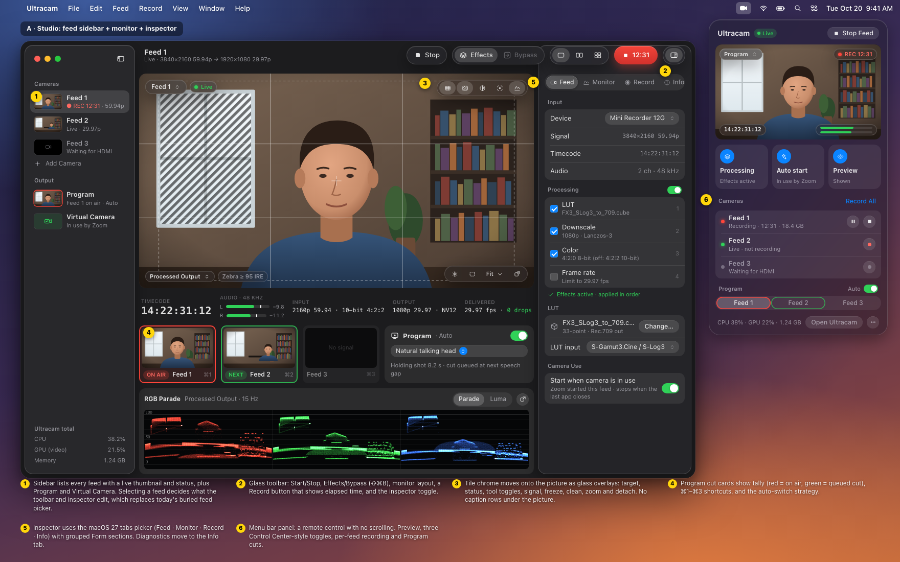
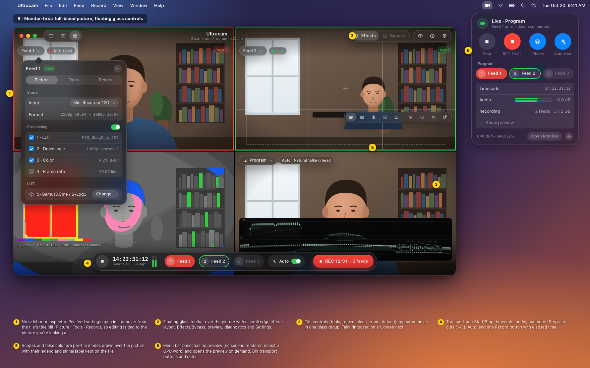
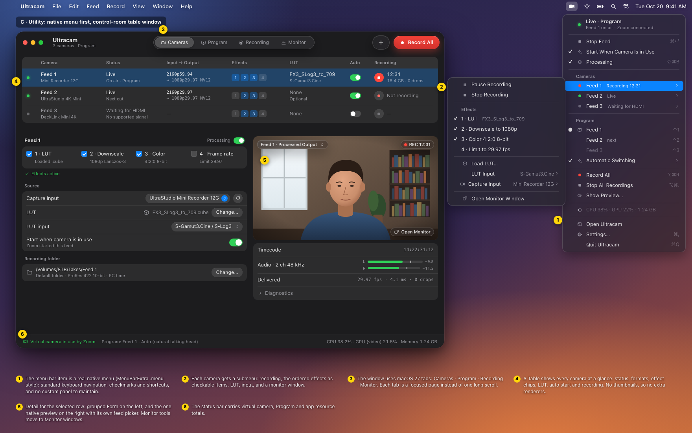

Three contrasting directions for the main window and menu bar item, built from the inventory in
docs/UI_REDESIGN.md. These are static HTML/CSS approximations of macOS 27 Liquid Glass controls,
not shipping code. The same state appears in all three: three cameras, Program mode, Feed 1 on air and recording,
and Zoom using the virtual camera.
| A · Studio | B · Monitor-first | C · Utility | |
|---|---|---|---|
| Structure | NavigationSplitView: feed sidebar · monitor · inspector (tabs) | Full-bleed picture, floating glass toolbar and transport, popovers | Tabbed window with a camera Table + detail Form; menu bar is a native NSMenu |
| Which feed am I editing? | Sidebar selection (one place) | The tile whose title pill you opened | Table row selection; menu submenus per camera |
| Menu bar item | Glass panel: preview, toggles, per-feed record, cuts | Glass remote: no preview, big transport, cuts | Native menu with per-camera submenus |
| Native previews | Main + sidebar/cut thumbnails (needs more renderers) | Up to 4 tiles (existing monitor surfaces); tray has none | One preview + optional Monitor windows |
| Monitor tools | Overlay toggles on picture; settings in Monitor tab | Hover glass group per tile; per-tile modes | Moved to Monitor tab / windows |
| Program switching | Cut cards under picture, ⌘1–3 | Numbered cut pills in transport bar | Program tab + radio items in menu |
| Diagnostics | Inspector Info tab | Toolbar ⓘ popover/window | Disclosure under preview + status bar |
| Best for | Multi-camera production, the most discoverable | Watching pictures: a monitor/switcher feel | Set-and-forget Zoom use from the menu bar |
| Risk | Thumbnails cost GPU; densest window | Settings hidden in popovers; overlays over picture | Least visual; monitor tools a click away |


